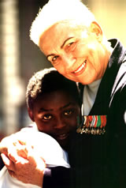
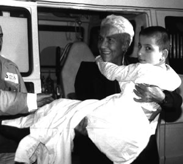

Mariapia
Fanfani

La sua è una vita
dedicata ai poveri nel mondo.
Nel 1975 Mariapia Tavazzani, vedova Vecchi, ha
sposato Amintore Fanfani.
E’ dal 1942 che Mariapia Fanfani si dedica
alle iniziative di solidarietà a partire
dalla sua prima organizzazione di volontariato
“First Help”.
Inizia così il suo impegno in campo umanitario
che farà della solidarietà la sua
ragione di vita e che la porterà in ogni
angolo del mondo dal quale si levi una richiesta
di aiuto: in Africa, in Asia, nell’America
Latina, nell’Europa Orientale.
Nel corso dei suoi 64 anni di attività
umanitarie, ricopre ruoli importanti di carattere
internazionale (è stata Presidente del
Comitato Nazionale Femminile della Croce Rossa
Italiana e Vice Presidente della Lega delle Società
di Croce Rossa e di Mezzaluna Rossa) che completano
la sua esperienza e le consentono di operare con
estrema efficacia in favore anche di intere popolazioni
che implorano di essere aiutate perché
vittime di calamità naturali, delle guerre
o di gravi oppressioni: le missioni umanitarie
che effettua insieme a Raissa Gorbaciova in soccorso
dei i bambini di Chernobyl e di quelli malati
di AIDS, sono tra le più toccanti fra quelle
che compie in Russia.
Attualmente è Presidente dell’Associazione
“Sempre Insieme per la Pace”, che
ha fondato nel 1983; è anche Presidente
della “Together for Peace Foundation”
che ha fondato nello Stato del Delaware (U.S.A.)
nel 1988 per dedicare il proprio impegno alla
divulgazione degli ideali di pace e alla creazione
di una rete di personalità internazionali
disposte a collaborare attivamente per lo stesso
obiettivo.
Nel 1991 la Fondazione è stata insignita
del riconoscimento di “Peace Messenger”
da parte delle Nazioni Unite. Dal 1994 Mariapia
Fanfani è Membro dell’Advisory Committee
dell’European Action Council for Peace in
the Balkans a Bruxelles.
Per intervenire con sempre maggior forza di fronte
a eventi e catastrofi che sconvolgono l’umanità,
Mariapia Fanfani realizza cinque “Navi della
Pace”, navi mercantili cariche di aiuti
umanitari in grado di dare sollievo alle vittime
di immani emergenze umanitarie.
Nel momento più critico della siccità
nell’Africa Subsahariana (1985) Mariapia
Fanfani organizza la prima “Nave della Pace”
che, facendo il periplo dell’Africa, le
consente di portare e distribuire personalmente
gli aiuti in 18 fra i Paesi più colpiti
dalla drammatica calamità naturale.
La seconda Nave viene realizzata in occasione
del quinto centenario dell’impresa di Cristoforo
Colombo (1992) per portare aiuti in Sud America
e nel Corno d’Africa. Dopo essere entrata
in Ruanda durante il genocidio del 1994, porta
in salvo oltre 150 bambini ed adolescenti, realizza
l’ultima “Nave della Pace”,
grazie alla quale distribuisce 320 container di
aiuti umanitari che vengono destinati anche a
sostegno della costruzione di diverse forme di
case d’accoglienza per orfani, ancor oggi
attive.

Nel più recente passato, Mariapia Fanfani
interpreta la solidarietà in maniera dinamica,
cogliendone tutti i mutamenti e le più
impellenti necessità che l’umanità
si è trovata ad affrontare a seguito di
nuove e sempre più distruttive guerre legate
anche al terrorismo internazionale.
Interviene così in Iraq ed in Afghanistan,
dove è la prima donna occidentale a raggiungere
Kandhar subito dopo la caduta del regime talebano.
In entrambi questi Paesi continua a fare giungere
aiuti dalla sua organizzazione. Nel 2004 si reca
in Ossetia per portare speranza ed affetto alle
vittime dell’infame attentato terroristico
perpetrato, nella scuola di Beslan, ai piccoli
allievi ed a molti dei loro genitori.
Il suo impegno è sempre stato rivolto anche
all’Italia. Organizza personalmente e dirige
numerose missioni umanitarie per rispondere alle
urgenze dovute a calamità naturali che
hanno sconvolto il nostro Paese negli ultimi trent’anni
(in Friuli, in Umbria e nelle Marche, in Valtellina,
in Irpinia, in Calabria e in Sicilia).
Attraverso “Insieme per la Pace” ed
ancor oggi con “Sempre Insieme per la Pace”,
ha offerto e offre sostegno complessivamente a
451 istituti assistenziali in condizioni di reale
difficoltà. Notevole è stata anche
l’opera svolta a favore dei moltissimi profughi
rifugiati nel nostro Paese.
Ha conosciuto tutti i protagonisti della storia
mondiale degli ultimi decenni, ma l’incontro
con Madre Teresa di Calcutta – avvenuto
all’inizio degli anni ‘70 in occasione
di una sua missione umanitaria in India –
è stato determinante per dare una svolta
alla sua vita personale ed alla qualità
del suo volontariato. Madre Teresa le ha insegnato
a non fermarsi mai davanti agli egoismi e alle
incomprensioni, all’indifferenza e alle
ingiustizie sempre presenti nelle giornate di
chi opera per il bene.
Davanti alle grandi difficoltà di raccogliere
fondi, nel 1995 Mariapia Fanfani decide di vendere
tutti i suoi gioielli all’asta, memore di
un incontro avuto con Madre Teresa che la esortava
a superare le difficoltà finanziarie per
dar seguito alle sue opere umanitarie anche vendendo
i suoi gioielli. Gioielli dei quali si è
privata senza esitazioni proprio per continuare
a distribuire personalmente gli aiuti della sua
organizzazione a chi ne ha estremo bisogno.
Così ha potuto condividere l’esperienza
di Madre Teresa e continuare a percorrere, unita
spiritualmente a lei il difficile cammino della
solidarietà.
|